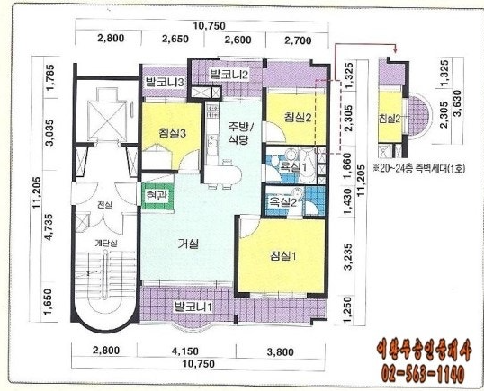

현관에서 집 안을 바라볼 때, 왼쪽은 거실입니다.X 좌표 반전 적용 · 표기 치수 우선 · 실측 전 검토 후보
① 원본 방향 1호 라인 source 2D
문 위치 교정이 반영된 원본 방향 geometry
첨부 원본 이미지 보기

② 실제 2호 라인 동일 좌표 2D
━ 벽 중심선━ 문·회전호━ 창·유리 경계┄ 미확정 외곽
선 클릭 → 오른쪽에서 숫자 수정 · 도면 위 드래그로 보기 이동 · 격자 1,000mm
③ 동일 데이터 3D 현관 밖 → 집 안
검증 중
화면 클릭 → WASD 이동 · 마우스 시점 · Esc 해제
임시 검증 라벨은 벽 너머에도 표시됩니다.
출입 관계 재검증
방향 설명은 읽기 쉬운 원본 1호 라인 기준입니다.| 공간 | 이전 모델 | 원본 판독 → 교정 | 검토 메모 |
|---|